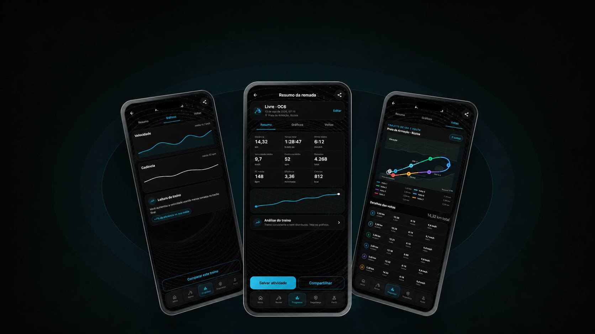

Performance
Métricas ao vivo, histórico, voltas e comparações para orientar decisões de treino.
Uma plataforma digital para clubes, equipes e atletas que querem transformar cada remada em uma experiência mais inteligente.


O VA'A PADDLE conecta preparação, acompanhamento e análise em uma jornada única — do primeiro checklist à evolução da equipe.
Métricas ao vivo, histórico, voltas e comparações para orientar decisões de treino.
Checklist, plano de remada, localização e fluxo SOS integrados à rotina.
Interface premium, simples e adaptada ao contexto real de quem está na água.
Dados organizados para criar valor para atletas, equipes e operações.
A experiência acompanha o usuário antes, durante e depois da água. Cada módulo compartilha a mesma linguagem, os mesmos dados e uma navegação consistente.


O PADDLE nasce para o remador e evolui conectando técnicos, clubes, equipes e parceiros dentro do mesmo ecossistema Va'a.
Treinos estruturados, métricas específicas, evolução, histórico e segurança em uma experiência construída para quem rema.
↗Prescrição de treinos, acompanhamento de performance e análise da evolução individual e coletiva.
↗Atletas, treinos, calendário e evolução conectados em um ambiente pensado para aproximar técnico e equipe.
↗Fabricantes de equipamentos, eventos, provas, federações e parceiros podem fazer parte do ecossistema PADDLE.
↗Um produto individual por natureza. Uma plataforma por potencial.


O aplicativo transforma cuidados essenciais em um fluxo claro: preparar o equipamento, compartilhar o plano, acompanhar localização e agir em uma emergência.


Modalidade, tipo de treino, objetivo e equipamentos essenciais.
Métricas claras, controles simples e contexto ambiental.
Resumo, gráficos, voltas e comparação com o histórico.
Consistência, recordes e decisões melhores para o próximo treino.


Vamos construir uma experiência de remo alinhada à sua marca, ao seu público e aos objetivos do seu negócio.